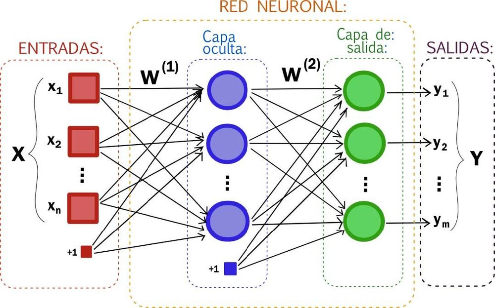
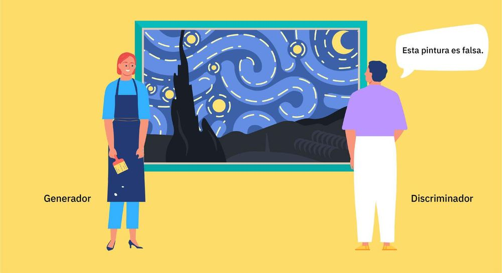
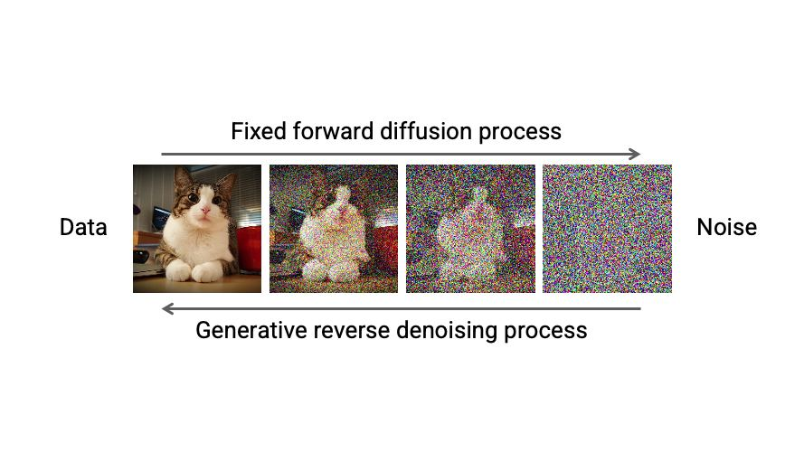

Introducción a la IA
…con ayuda de la IA
José Miguel Mota Macías · josemiguel.mota@uca.es
Máster Universitario en Dirección de Marketing Digital y Social · Universidad de Cádiz
Introducción
Qué es la IA, de dónde viene y cómo aprende una máquina.
Seguro que habéis escuchado…
«La IA nos va a quitar el trabajo».
«No puedes usar la IA para tu investigación».
«Con la IA ya no tengo que hacer nada».
Las tres frases son, como mínimo, inexactas. Para opinar con criterio primero hay que saber de qué hablamos.
¿Pero sabemos qué es la IA?
¿O pensamos que todo es ChatGPT?
ChatGPT, Gemini o Claude son solo una parte —la más visible— de la IA. El filtro de spam de vuestro correo, las recomendaciones de Netflix, el precio de un vuelo o el anuncio que veis en Instagram también son IA, y llevan años funcionando.
¿Qué es la IA?
Disciplina científica que se ocupa de crear programas informáticos que ejecutan operaciones comparables a las que realiza la mente humana, como el aprendizaje o el razonamiento lógico.
Un sistema basado en una máquina, diseñado para funcionar con distintos niveles de autonomía, que puede mostrar capacidad de adaptación tras su despliegue y que, para objetivos explícitos o implícitos, infiere a partir de la información de entrada que recibe cómo generar resultados —predicciones, contenidos, recomendaciones o decisiones— que pueden influir en entornos físicos o virtuales.
La presentación original citaba la definición del Grupo de Expertos de Alto Nivel de la Comisión Europea (2019). Hoy la definición de referencia en Europa es la del Reglamento de IA, que es ley.
Pero esto no es algo de ayer
- 1936 · Turing describe su «máquina universal».
- 1950 · Turing publica Computing Machinery and Intelligence y propone el «juego de la imitación» (test de Turing).
- 1956 · Conferencia de Dartmouth: nace el término «inteligencia artificial».
- 1997 · Deep Blue gana a Kaspárov al ajedrez.
- 2012 · Las redes neuronales profundas entrenadas con GPU arrasan en reconocimiento de imágenes.
- 2017 · Google presenta la arquitectura Transformer, base de los LLM actuales.
- 2022 · Sale ChatGPT: la IA generativa llega al gran público.
- 2025–2026 · Modelos que «razonan», multimodales y agentes que actúan por nosotros. nuevo
La idea de Turing
Alan Turing imaginó una máquina que podía leer símbolos en una cinta y, siguiendo un conjunto de reglas, podía simular cualquier algoritmo.
Si una tarea (incluso una creativa o estratégica) puede descomponerse en un conjunto de reglas y datos, una máquina puede ejecutarla. La IA moderna es la evolución de esta idea.
La jerarquía de la IA
LEARNING
- Inteligencia artificial (IA): cualquier programa o máquina que imita la inteligencia humana para realizar tareas (tomar decisiones, reconocer objetos, entender el lenguaje).
- Machine learning (ML, aprendizaje automático): una forma de lograr IA. En lugar de programar reglas fijas («SI un cliente gasta más de 100 €, ENVIAR cupón»), el sistema aprende de los datos. «Alimentamos» a la máquina con miles de ejemplos de compra y ella descubre los patrones que llevan a una segunda compra.
- Deep learning (DL, aprendizaje profundo): una técnica avanzada de machine learning que usa redes neuronales para resolver problemas muy complejos.
«Alimentamos»
La máquina aprende de los datos, pero no toda la «enseñanza» es igual. Según el problema que queráis resolver (y los datos que tengáis), usaréis uno de estos tres métodos.
Aprendizaje supervisado
Es el tipo más común. «Supervisamos» a la IA dándole datos ya etiquetados con la respuesta correcta: le damos el problema y la solución para que aprenda la relación.
Analogía
Le enseñáis a la IA una imagen (el problema) y en el reverso está la palabra «gato» (la etiqueta o solución).
Ejemplos de marketing
- Clasificación (spam / no spam): entrenáis el modelo con 50 000 correos etiquetados como «spam» o «importante». Aprende los patrones y clasifica los nuevos.
- Análisis de sentimiento básico: le dais 1000 publicaciones etiquetadas como «positiva», «negativa» o «neutra» y aprende a clasificar las siguientes.
Aprendizaje no supervisado
Le damos a la IA un montón de datos «crudos» y le pedimos que encuentre patrones ocultos o estructuras por su cuenta.
Analogía
Darle a alguien una caja con 10 000 piezas de LEGO de todas las formas y colores y decirle: «Organiza esto». Empezará a crear grupos lógicos —«piezas rojas», «piezas cuadradas», «ruedas», «muñecos»— sin que nadie le diga qué grupos crear.
Ejemplo en marketing
Le dais todos vuestros datos de clientes (demografía, historial de compra, navegación) y los agrupa. El resultado son buyer personas definidos por datos, no por intuición.
Ej.: «Grupo 1: cazadores de ofertas de fin de semana», «Grupo 2: clientes VIP de alto valor», «Grupo 3: clientes en riesgo de abandono».
Aprendizaje por refuerzo
Aprendizaje por prueba y error, como entrenar a un perro. La IA (el «agente») toma una acción; si es buena, recibe una recompensa; si es mala, un castigo o nada. Su objetivo es maximizar la recompensa total a largo plazo.
Analogía
Un perro que aprende a «dar la patita» a cambio de una galleta. 🐕
Ejemplos en marketing
- Precios dinámicos (VTC, aerolíneas): sube 1 € → la gente sigue comprando → «¡recompensa!, sube otro». Sube 5 € → nadie compra → «¡castigo!, baja el precio».
- Personalización web en tiempo real: la IA prueba el banner A → no hay clic. Con otro usuario parecido prueba el B → clic (¡recompensa!). Aprende qué mostrar en tiempo real.
Hoy el refuerzo también se usa para «educar» a los chatbots: personas valoran sus respuestas y el modelo aprende de esas valoraciones (RLHF).
Redes neuronales

El deep learning usa redes neuronales, inspiradas en la estructura del cerebro: «neuronas» interconectadas en capas. Cada conexión tiene un peso que se ajusta durante el entrenamiento.
El «deep» (profundo) significa que tiene muchas capas: las primeras detectan rasgos simples y las siguientes los combinan en conceptos cada vez más complejos.
Vídeo: ¿qué es una red neuronal?YouTube · se abre en otra pestaña
GPU
GPU (Graphics Processing Unit, unidad de procesamiento gráfico). Una red neuronal son millones de cálculos sencillos (sumas y multiplicaciones) que deben hacerse en paralelo.
Las GPU, pensadas para videojuegos, resultaron perfectas para eso. Hoy son esenciales para entrenar y usar los modelos de IA, y por eso NVIDIA se ha convertido en una de las empresas más valiosas del mundo.
Tareas en secuencia.
Tareas en paralelo.
Tipos de IA
Según su capacidad
- IA estrecha (narrow AI)
- Diseñada para una tarea concreta o un abanico limitado de tareas. Toda la IA que existe hoy es de este tipo, aunque los grandes modelos sean cada vez más versátiles.
- IA general (AGI)
- Aspira a realizar cualquier tarea intelectual que pueda hacer una persona. Todavía no existe y su llegada es objeto de debate.
Según su función
- Generativa: crea contenido (texto, imágenes, música, vídeo).
- Predictiva: pronostica eventos o tendencias a partir de datos históricos.
- Discriminativa: distingue entre clases o categorías.
- Analítica: procesa e interpreta datos complejos para apoyar decisiones.
- Estadística: usa modelos estadísticos para predecir, decidir o clasificar.
- Agéntica: planifica y ejecuta tareas de varios pasos usando herramientas (navegar, rellenar formularios, comprar). nuevo
LLM: modelos grandes de lenguaje
Un LLM (Large Language Model) es un tipo de IA basado en deep learning, entrenado con GPU sobre cantidades enormes de texto (webs, libros, artículos, código).
Su función principal es sencilla: predecir la siguiente palabra (en realidad, el siguiente fragmento o token). Al hacerlo miles de millones de veces «aprende» gramática, contexto, datos y cierta capacidad de razonamiento.
- ChatGPT (OpenAI)
- Gemini (Google)
- Claude (Anthropic)
- Copilot (Microsoft)
- Llama (Meta)
- Mistral
- DeepSeek
Hoy los modelos son multimodales
- Texto a texto: «Escríbeme tres líneas de anuncio para Instagram sobre…».
- Texto a imagen: «Crea una imagen de un perro feliz bebiendo un refresco en la playa, estilo fotorrealista» (Midjourney, ChatGPT, Gemini, Adobe Firefly).
- Texto a vídeo: «Un clip de un coche corriendo por el desierto» (Sora, Veo, Runway).
- Texto a audio: «Genera una locución cálida que diga…» (ElevenLabs; para música, Suno).
- Y al revés: les podéis pasar una foto, un PDF, una hoja de cálculo o un audio y preguntarles por ellos.
Autocodificador variacional (VAE)
Es como un artista que mira un cuadro y hace rápidamente un boceto (codificador).
Después es capaz de pintar un cuadro nuevo usando solo ese boceto (decodificador) como referencia.
Red generativa antagónica (GAN)

Es una competición entre un falsificador (el generador) y un crítico de arte (el discriminador).
El ciclo se repite hasta que el falsificador consigue falsificaciones casi perfectas. Así nacieron los primeros deepfakes.
Modelos autorregresivos
Funcionan como narradores: escuchan el comienzo de una historia y la continúan, prediciendo lo que viene después a partir de las palabras anteriores.
Es exactamente lo que hacen ChatGPT, Gemini o Claude: son modelos autorregresivos con arquitectura Transformer.
Modelos de difusión

Funcionan en dos fases. Primero el modelo añade ruido poco a poco a los datos (difusión).
Después aprende el proceso inverso: quitar el ruido para reconstruir los datos (reversión).
Por eso, cuando generan una imagen nueva…
IA y marketing
Del «anuncio para todos» al «mensaje para ti».
La transformación del marketing
Del «anuncio para todos» al «mensaje para ti».
Antes, el marketing se basaba en la intuición y los promedios («nuestro cliente medio es una mujer de 30 a 40 años»).
La IA permite pasar del marketing de masas al marketing de segmentos de uno (hiperpersonalización). Lo cambia todo: cómo encontramos clientes, cómo les hablamos y qué les vendemos.
1. Comprensión profunda del cliente
El fin de la «intuición» para crear un buyer persona.
- Antes
- Creábamos dos o tres buyer personas en una reunión, a partir de nuestra percepción («María, la madre ocupada»).
- Ahora
- Usamos clustering: alimentamos un modelo con todos los datos de los clientes (compras, clics, ubicación, datos demográficos) y le pedimos «encuentra patrones».
- Resultado
- No salen 3 segmentos, salen 15 microsegmentos que nunca habríamos visto. Ej.: «clientes que solo compran de noche, desde el móvil y muy sensibles a los gastos de envío»; «clientes de alto valor que compran cada tres viernes y responden bien a los correos de novedades».
- Cambio
- Dejamos de adivinar quiénes son nuestros clientes y empezamos a saberlo por su comportamiento real.
2. Predecir el futuro
El marketing pasa de ser reactivo (reaccionar a lo que pasó) a ser predictivo (actuar antes de que pase).
Predicción de abandono (churn)
- Antes
- «El mes pasado perdimos 1000 clientes».
- Ahora
- Un modelo analiza el comportamiento de cada cliente («hace dos semanas que no abre un correo», «su uso de la app ha bajado un 50 %») y da una puntuación de riesgo de abandono.
- Cambio
- Actuamos antes de que se vayan: oferta de retención solo a quien tiene un riesgo del 80 % o más.
Puntuación de leads (lead scoring)
- Antes
- Ventas llama a todos los leads por orden de llegada.
- Ahora
- Un modelo puntúa cada lead de 1 a 100 según las acciones que predicen una compra («visitó la página de precios» + «empresa de 50 empleados»).
- Cambio
- El equipo dedica su tiempo a los leads «calientes» (más de 90) y la eficiencia se dispara.
3. Optimización en tiempo real
La IA toma miles de decisiones por segundo para maximizar un objetivo (normalmente, el retorno de la inversión).
Publicidad programática (real-time bidding)
Cuando entráis en una web, en los milisegundos que tarda en cargar se celebra una subasta. Un agente de IA decide cuánto pagar por mostraros ese anuncio a vosotros en ese momento. Su recompensa: que hagáis clic (o compréis).
Cambio: el presupuesto no se gasta «en general»; se optimiza impresión a impresión.
Precios dinámicos
La IA ajusta el precio (vuelos, hoteles, VTC, entradas) en tiempo real según la oferta, la demanda, la hora, el clima o el comportamiento del usuario.
Cambio: se maximizan los ingresos vendiendo al precio óptimo en el momento exacto (con límites legales y de reputación: ver «ética»).
4. Crear y conversar a escala
La revolución más reciente: la IA ya no solo analiza, también crea, conversa… y actúa.
Generación de contenido
- Antes
- Un redactor tarda un día en escribir cinco versiones de un anuncio.
- Ahora
- Un LLM genera 50 versiones en segundos, adaptadas a diez segmentos.
- Cambio
- El papel humano pasa de «crear desde cero» a dirigir, editar y curar. Las pruebas A/B se multiplican.
Hiperpersonalización
- Antes
- Correos con «Hola, [Nombre]».
- Ahora
- Un mensaje único por cliente: «Hola, Juan: el mes pasado compraste nuestra chaqueta de running azul. Como este fin de semana va a llover en tu ciudad, quizá te interese el pantalón impermeable a juego…».
Chatbots conversacionales
- Antes
- Chatbots de reglas («pulse 1 para ventas»).
- Ahora
- Asistentes que entienden la intención, consultan el historial del cliente y resuelven problemas complejos 24/7.
- Cambio
- La atención al cliente se vuelve instantánea y se convierte en un canal de venta.
Agentes y búsqueda con IA nuevo
Cada vez más gente pregunta a ChatGPT, Gemini o a los resúmenes con IA de Google en vez de hacer clic en enlaces, y ya hay agentes que comparan y compran por el usuario. Para las marcas, el reto pasa de «salir primero en Google» a ser la respuesta que da la IA (lo que algunos llaman GEO, generative engine optimization).
IA y ética
Un nuevo poder conlleva una nueva responsabilidad.
Ética y límites de la IA en el marketing
La IA no es una «caja negra mágica». Sus decisiones (o las que nos recomienda) tienen consecuencias reales.
Usar mal la IA no solo es «poco ético»: puede destruir la reputación de una marca o acarrear multas millonarias.
El marco legal en Europa actualizado
- RGPD (2018): datos personales, consentimiento, minimización.
- Reglamento de IA (UE 2024/1689): desde febrero de 2025 prohíbe las prácticas manipuladoras y obliga a las empresas a formar a su personal en IA; desde agosto de 2026 se aplican, entre otras, las obligaciones de transparencia (avisar de que se habla con una IA y señalar el contenido sintético). Algunos plazos están en revisión por el paquete «Ómnibus Digital».
- Ley de Servicios Digitales (DSA): prohíbe la publicidad dirigida a menores basada en perfiles y la segmentación con datos sensibles en las grandes plataformas.
Privacidad de datos y el factor «creepy»
El problema: la IA de marketing tiene «hambre de datos». Para predecir y personalizar necesita saberlo todo: qué compráis, dónde hacéis clic, cuánto tiempo miráis un producto, incluso por dónde os movéis.
El límite legal: el RGPD prohíbe recoger datos sin una base legal (normalmente, consentimiento explícito), obliga a la «minimización» (recoger solo lo necesario) y reconoce el derecho de supresión («derecho al olvido»).
El límite de marketing: hay una línea muy fina entre personalización útil y persecución inquietante.
Útil
«Vemos que compras café cada 30 días. ¿Quieres programar el envío?».
«Creepy»
«Por tu geolocalización sabemos que esta semana has pasado por tres cafeterías de la competencia. Te ofrecemos un 50 % si vuelves».
Caso clásico: según contó The New York Times en 2012, el modelo predictivo de la cadena Target dedujo que una adolescente estaba embarazada antes que su familia, por sus cambios de compra (loción sin perfume, vitaminas). Leer el caso.
Sesgo algorítmico y discriminación
El riesgo más peligroso y sutil de la IA.
El problema: la IA aprende de datos históricos. Si esos datos reflejan prejuicios (racismo, sexismo, edadismo), la IA no solo los aprende: los amplifica y automatiza a gran escala.
«Bias in, bias out»: si entra prejuicio, sale prejuicio.
Publicidad excluyente
Un algoritmo de anuncios aprende que los empleos directivos o técnicos reciben más clics de hombres y deja de enseñárselos a mujeres. Ocurrió con anuncios de empleo STEM (Lambrecht y Tucker, 2019) y llevó a Meta a cambiar su sistema de anuncios de vivienda tras un acuerdo con el Gobierno de EE. UU. en 2022.
Segmentación injusta
Un banco entrena un modelo con 30 años de datos en los que las mujeres recibían menos crédito; el modelo «aprende» que ser mujer es un riesgo. En 2019 la Apple Card fue investigada por ofrecer menos límite a mujeres: el regulador no halló discriminación ilegal (2021), pero sí señaló la falta de transparencia para explicar las decisiones.
Transparencia, manipulación y «cajas negras»
El problema: muchos modelos de deep learning son «cajas negras»: sabemos qué datos entran y qué decisión sale, pero no podemos explicar fácilmente por qué.
Transparencia: ¿debe saber el cliente que habla con un chatbot y no con una persona? Sí. Ocultarlo es engañoso y, con el Reglamento europeo de IA, obligatorio avisar.
De la persuasión a la manipulación
Persuasión (aceptable)
«Quedan 10 unidades» (si es verdad).
Manipulación (inaceptable y prohibida)
Un modelo detecta por vuestra navegación y la hora que sois «compradores compulsivos en un momento de ansiedad» y solo entonces os muestra un precio inflado con una cuenta atrás falsa. Explotar vulnerabilidades así está prohibido por el art. 5 del Reglamento de IA.
«Alucinaciones» y responsabilidad
El problema: los LLM están diseñados para sonar plausibles, no para ser veraces. Predicen la siguiente palabra y a veces inventan hechos, cifras o fuentes de forma muy convincente: es lo que se llama «alucinación». Los modelos actuales alucinan menos, pero siguen haciéndolo.
La IA generativa es un becario con muchísimas ganas, increíblemente rápido… pero que se inventa parte de lo que dice.
Caso real — el chatbot de Air Canada (2024): un cliente preguntó al chatbot de la aerolínea por las tarifas por duelo. El chatbot se inventó una política que no existía; el cliente compró el billete confiando en ella. La aerolínea se negó a cumplirla, el cliente reclamó y un tribunal de Columbia Británica obligó a Air Canada a pagar: la empresa responde de lo que dice su chatbot.
La lección para el marketing
Vosotros sois los responsables de lo que publica vuestra IA. Nunca uséis un texto, una imagen o un dato generado por IA sin que una persona lo revise, lo verifique y lo edite.
Herramientas
Un mapa por usos. Las herramientas cambian cada pocos meses; los conceptos que hay detrás, no.
Escucha social y tendencias
- Brandwatch
- Talkwalker
- Semrush
- Google Trends
Qué hacen: rastrean millones de publicaciones en redes, blogs y foros para deciros de qué habla la gente y cómo se siente (análisis de sentimiento).
Concepto de IA: deep learning de procesamiento del lenguaje natural para entender el contexto y hasta el sarcasmo (que «brutal» puede ser positivo), y aprendizaje no supervisado para agrupar conversaciones en temas que no habíais visto.
Investigación de mercado «al estilo académico»
- Elicit
- Consensus
- NotebookLM
- Modo «investigación en profundidad» de ChatGPT, Gemini o Claude
- Perplexity
Qué hacen: en lugar de buscar artículos uno a uno, les preguntáis «¿cuáles son las barreras de compra más habituales en el comercio electrónico de moda sostenible?». Leen estudios e informes y devuelven una respuesta resumida con fuentes.
Ojo: abrid siempre las fuentes y comprobad que dicen lo que la IA afirma. Son las mismas herramientas que se usan en investigación científica, con los mismos riesgos.
Texto, imagen y vídeo
Texto (copy, SEO, correo)
- ChatGPT
- Gemini
- Claude
- Copilot
- Jasper
Entradas de blog, 50 variantes de un anuncio, guiones, textos de landing. Concepto: LLM.
Imagen (publicidad, redes)
- Midjourney
- ChatGPT
- Gemini
- Adobe Firefly
- Canva
Producto, moodboards y visuales a partir de un prompt. Firefly se entrena con imágenes con licencia y se vende como «segura para uso comercial».
Vídeo y audio nuevo
- Veo
- Sora
- Runway
- ElevenLabs
- Suno
Spots cortos, locuciones y música. Recordad: el contenido sintético realista debe señalarse como tal.
Plataformas de publicidad y CRM
Publicidad: la gran IA
- Meta Advantage+
- Google Performance Max
- Google AI Max
Ya no son plataformas manuales: son «cajas negras» de IA. El profesional ya no segmenta «mujeres de 25 a 30 que viven en Madrid»; le da a la IA (1) el objetivo, (2) el presupuesto y (3) imágenes y textos, y cada vez más la propia plataforma genera las variantes.
Concepto: optimización por refuerzo. Prueba millones de combinaciones anuncio-audiencia-hora y aprende cuál vende más barato.
Correo y CRM
- HubSpot (Breeze)
- Salesforce (Agentforce)
- Predicción: qué clientes van a abandonar o qué lead está más caliente (supervisado).
- Optimización: la mejor hora de envío para cada suscriptor (refuerzo).
- Generación: redactan el correo de seguimiento (LLM).
- Agentes: atienden, cualifican leads y agendan reuniones solos. nuevo
Análisis de datos en lenguaje natural
- ChatGPT (análisis de datos)
- Gemini en Google Sheets
- Copilot en Excel
- Julius AI
Qué hacen: subís un CSV o un Excel («Ventas_T3.csv») y pedís: «Dime los tres productos más vendidos por región y haz un gráfico de barras».
Concepto de IA: LLM que escriben y ejecutan código (Python) por debajo para hacer el análisis.
Comprobad siempre un par de cifras a mano: si la IA ha leído mal una columna, el gráfico saldrá precioso… y equivocado.
Las que uso a diario
Gamma
Presentaciones, documentos y webs a partir de un texto o un esquema.
NotebookLM
Subís vuestras fuentes (PDF, webs, vídeos) y le preguntáis solo sobre ellas: resúmenes, guías de estudio, mapas mentales y hasta un pódcast generado.
Navegadores con agente
ChatGPT Atlas, Gemini en Chrome, Perplexity Comet… El navegador ya no solo muestra páginas: hace cosas por vosotros (buscar, comparar, rellenar, reservar).
Y llegó un día en el que el mundo cambió: la IA dejó de solo responder y empezó a actuar.
Taller práctico
Consultoría de IA para Jerez «pet-friendly».
Consultoría de IA para Jerez «pet-friendly»
Simulamos una consultoría de marketing 360°. Usaremos IA para responder las cuatro preguntas que nos haría un comercio local de Jerez (una librería, una cafetería, una tienda de ropa):
- ¿Es una moda o una oportunidad real? Justificación de la estrategia · Consensus / Elicit
- ¿Hay demanda real en Jerez? Análisis de la demanda local · Google Trends
- Si lo hago, ¿qué espera el cliente de Jerez? Voz del cliente · Google Maps + LLM
- Dame ideas concretas que funcionen. Generación de estrategia · LLM
Justificar la estrategia
Herramienta «científica»: Consensus (o Elicit).
El problema: el dueño nos dice: «¿Para qué voy a complicarme? ¿De verdad la gente gasta más en un sitio por ser pet-friendly?».
La acción: no podemos preguntar por «Jerez» (es demasiado local para los estudios académicos). Preguntamos por el impacto económico de la estrategia. En inglés funciona mejor:
What is the economic impact of "pet-friendly" policies on small businesses, retail, or hospitality?
(¿Cuál es el impacto económico de las políticas pet-friendly en pymes, comercio y hostelería?)
Qué esperamos encontrar: una síntesis de artículos de economía y marketing; por ejemplo, que los dueños de mascotas perciben estas marcas como más éticas y les son más fieles, o que la «economía de las mascotas» se asocia a más gasto en ocio.
Antes de dar nada por bueno
Abrid al menos dos de los estudios citados y comprobad que dicen eso, de qué país son y de qué año. Si se confirma, ya no es una «moda»: es una estrategia de fidelización con respaldo académico.
Analizar la demanda local
Herramienta: Google Trends.
El problema: «Vale, funciona en otros sitios, pero… ¿y aquí? ¿En Andalucía? ¿En Jerez?».
- Abrid Google Trends. Filtro: España, últimos 5 años.
- Comparad «pet friendly» (término en inglés) con «aceptan mascotas» o «admiten perros» (términos locales).
- Mirad el mapa de «Interés por subregión». ¿Destaca Andalucía?
- Cambiad el filtro a Andalucía y mirad «Consultas relacionadas». ¿Aparece «Jerez», «Cádiz» o «playa perros Cádiz»?
Qué sacamos: si la tendencia crece (una ola que aprovechar) o está plana, y cómo busca la gente («hotel pet friendly Jerez», «bar que acepte perros»): las palabras clave exactas para el SEO local.
Si una ciudad no aparece, suele ser porque el volumen de búsquedas es bajo, no porque no haya interés. Es un dato, no una sentencia.
Escuchar al cliente de Jerez
El ejercicio más potente: un focus group instantáneo.
Herramientas: Google Maps (para obtener los datos) + un LLM (ChatGPT, Gemini, Claude…) para analizarlos.
El problema: «Perfecto. Pero si pongo un cuenco de agua, ¿es suficiente? ¿Qué valora de verdad quien viene con su perro?».
Fase 1 · Datos
- Buscad en Google Maps «restaurante pet friendly Jerez» (o «cafetería»).
- Entrad en los dos o tres primeros resultados con muchas reseñas.
- Buscad en las reseñas «perro», «mascota» o «pet friendly».
- Copiad 15–20 reseñas reales en un bloc de notas. Quitad los nombres de quienes las escriben: no los necesitamos y son datos personales.
Fase 2 · Análisis con IA
Abrid el LLM y usad este prompt:
Actúa como un analista de investigación de mercados experto en hostelería y comercio local. He recopilado [NÚMERO] reseñas reales de clientes que han visitado comercios "pet-friendly" en Jerez de la Frontera. Tu tarea es: 1. Analizar el sentimiento general de la experiencia "pet-friendly". 2. Identificar los 3 principales "puntos de dolor" (pain points) que mencionan los clientes, con una cita textual de ejemplo para cada uno. 3. Identificar las 3 principales "fortalezas" (delights) que más valoran y repiten, con una cita textual de ejemplo para cada una. 4. Darme una recomendación accionable en una frase basada en estos hallazgos. Usa solo la información de las reseñas. Si algo no aparece en ellas, dilo; no lo supongas. Aquí están las reseñas: [Pegar las 15-20 reseñas copiadas de Google Maps]
Pedir citas textuales sirve para comprobar que la IA no se inventa los hallazgos: buscad cada cita en vuestras reseñas.
Generar la estrategIA
Herramienta: un LLM (ChatGPT, Gemini, Claude…).
El problema: «¡Genial! Tengo la justificación académica, los datos de demanda y lo que dicen las reseñas. Ahora dame ideas de marketing concretas y baratas».
Sustituid las tres claves por lo que hayáis encontrado vosotros en los pasos 1–3:
Actúa como consultor de marketing para una [pyme, p. ej.: librería-café] en el centro de Jerez. Nuestra investigación nos ha dado 3 claves: 1. (De Consensus): ser "pet-friendly" aumenta la fidelidad del cliente. 2. (De Google Trends): la búsqueda de "pet friendly Jerez" está creciendo. 3. (De las reseñas): los clientes valoran que "les traigan agua sin pedirla" y "poder estar dentro" más que cualquier otra cosa. Basándote SOLO en estos 3 hallazgos, propón 5 estrategias de marketing de bajo coste y alto impacto para aplicar este mes. Para cada una indica qué hallazgo la justifica y cómo mediríamos si funciona.
Un ejemplo de resultado
- Kit de bienvenida canino: cartel en la puerta «Somos pet-friendly (de verdad)» y el personal sale con un cuenco de agua fresca en cuanto ve un perro.
- Sello «Aquí sí puedes entrar»: pegatina en la puerta basada en lo que piden las reseñas (si la normativa municipal y el tipo de local lo permiten).
- «Tarde de café y patas»: un sábado al mes, descuento para quien venga con su perro.
- Contenido en redes: un «salón de la fama» en Instagram con los clientes perrunos que visitan el local (con permiso de sus dueños).
- Alianza local: descuentos cruzados con veterinarios o tiendas de mascotas de Jerez.
Vuestro papel
La IA propone; vosotros decidís. ¿Cuál de las cinco es viable para vuestro comercio? ¿Cuál descartaríais y por qué? Esa respuesta es la que vale en una consultoría.
Para llevar
- La IA no es solo ChatGPT: lleva décadas en el marketing (segmentar, predecir, optimizar).
- Aprende de tres formas: supervisada, no supervisada y por refuerzo.
- La IA generativa crea; la agéntica, además, actúa.
- Los riesgos son reales: privacidad, sesgo, manipulación y alucinaciones.
- En Europa hay ley: RGPD, Reglamento de IA y DSA.
- Vosotros sois los responsables de lo que publica vuestra IA: revisad, verificad y editad.
¿Preguntas? · josemiguel.mota@uca.es